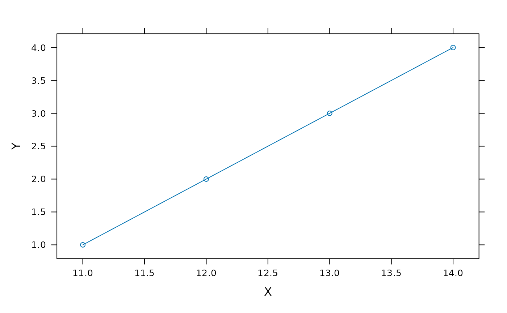

Print a plot object or save it to a PDF
pdf_print.RdA convenience function that either displays a plot object in an R graphics window or saves it to a PDF.
Usage
pdf_print(
plot_obj,
width = 7,
height = 7,
save_to_pdf = FALSE,
file = NULL,
new_window = TRUE,
...
)Arguments
- plot_obj
A plotting object that can be printed, such as a trellis object returned by a call to
xyplot.- width
The width of the figure in inches.
- height
The width of the figure in inches.
- save_to_pdf
When
save_to_pdfisTRUE,plot_objwill be saved as a PDF; otherwise it will be printed to an R graphics window.- file
A file name to use when
save_to_pdfisTRUE. IffileisNULL, then the default value will be determined by thepdffunction.- new_window
When printing
plot_objto an R graphics window, a new window will be created ifnew_windowisTRUE. Otherwise, the plot will replace the currently active plot window (if one exists).- ...
Additional arguments to be passed to
pdf.
Details
This function is helpful when developing and using analysis scripts. In this
context, it is recommended to define a boolean called SAVE_TO_PDF early
in the script and to always use pdf_print when creating figures,
passing the boolean as the save_to_pdf input argument. Figures can be
initially displayed in R (setting SAVE_TO_PDF = FALSE), and then saved
as PDFs once graphing parameters have been optimized (setting
SAVE_TO_PDF = TRUE).
Note that calling pdf from the command line (as is done
internally by pdf_print) is different than exporting an R graphics
object as a PDF from RGui or RStudio. For some reason, RGui and RStudio
override some of the pdf defaults and set useDingbats to
TRUE. This setting almost always causes problems when opening the PDFs
in software like Adobe Illustrator or Inkscape.
Examples
SAVE_TO_PDF = FALSE # change this to TRUE to save to a PDF
pdf_print(
lattice::xyplot(
1:4 ~ 11:14,
xlab = 'X',
ylab = 'Y',
type = 'b'
),
save_to_pdf = SAVE_TO_PDF,
file = 'example.pdf', # this name will only be used when saving to a PDF
new_window = FALSE # necessary for rendering the documentation examples
)
